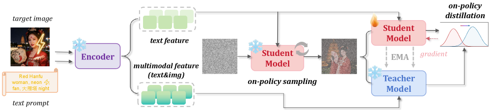
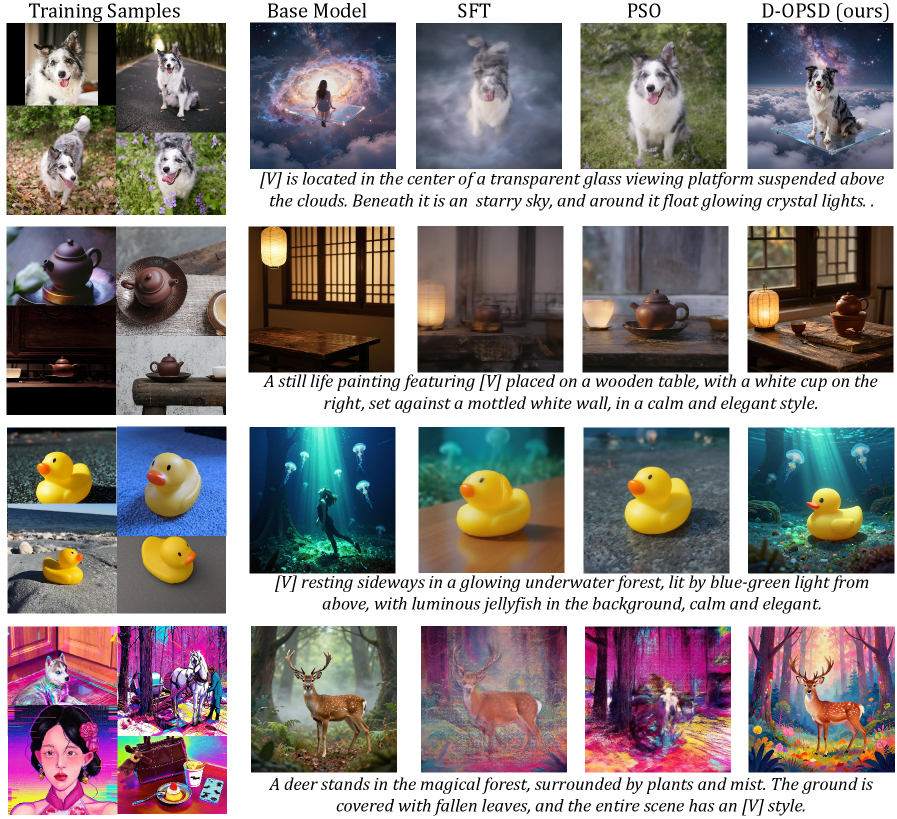
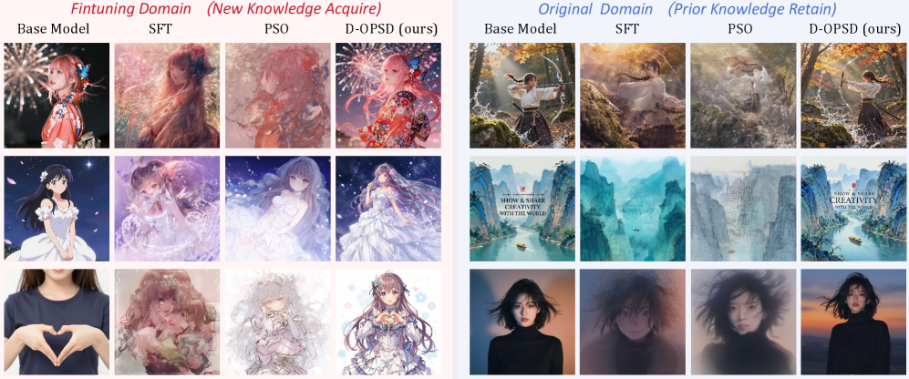
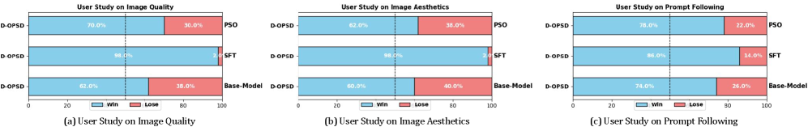
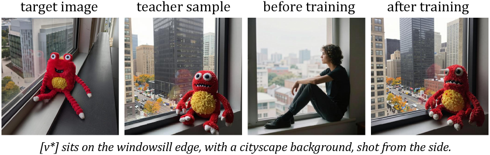

Z-Image-Turbo、FLUX.2-klein 这类少步扩散模型已经成为社区生产的默认选项，但它们跟传统多步模型有个共同麻烦：**用常规 SFT 一继续训，蒸出来的少步生成能力就掉**。
这篇论文提出 D-OPSD，一种针对已蒸馏扩散模型的在线策略自蒸馏方案。核心是把「学生跑自己的少步轨迹 + 老师用目标图作强上下文」两件事合成一步训练，不需要额外奖励模型，也不引外部教师。
常规 flow-matching SFT 是把目标图加噪、让模型回归到对应的 velocity。但**这个训练信号定义在「目标图诱导出的外部状态」上，而不是模型自己少步采样器真正会经过的状态**。
对于多步扩散模型，这种 train/test 错配还能靠迭代降噪自我纠错。对于只有 4 步或 8 步的蒸馏模型，学到的少步动力学非常脆弱：训练与推理走的状态一旦错位，画质立刻塌。作者做的实验和社区里的复现都能观察到这个现象，Vanilla SFT 学到了新概念，代价是原本的少步生成质量被显著破坏。
在线 RL 类方法（ReFL、flow-GRPO 等）本可以避开这个问题，因为它们的优化状态和监督信号都来自当前模型的采样轨迹。**问题在于它需要一个专门设计的奖励函数或偏好模型**，对社区二次开发者不现实，他们手上通常只有几对图文数据。
早期文生图模型用 T5 或 CLIP 做编码器，新一代 Z-Image、FLUX.2、Qwen-Image 都改用 LLM/VLM 主干作为编码器。作者发现一个此前未被注意的性质：**下游扩散模型直接继承了编码器的上下文能力**。
具体表现是：把「文本 prompt + 目标图」一起喂进编码器抽出多模态特征、再送去扩散生成，模型无需任何额外训练就能生成与目标图在概念或风格上一致的变体。这个「涌现出来的图文条件」正好可以当作 OPSD 里更强的教师上下文，而学生依旧只吃文本特征——两条路径共享同一套权重。
整个框架用一个模型扮两个角色。学生只用文本特征 c_s 采出自己的少步轨迹；老师在同样这条学生轨迹的每个时间步上，用「文本+目标图」的多模态特征 c_t 预测速度场；训练目标是让学生的速度预测去匹配老师的速度预测，用 stop-gradient 阻断老师那一路的梯度。
这个设计一次性解决了两个问题：**优化状态**是学生自己走出来的少步 rollout，**监督信号**在同一条轨迹上由「同一模型带更强上下文」自己给出。目标图只以「上下文」形式进入训练，而不是被直接塞进降噪轨迹当回归目标，学生在推理时该走的路径完全不变。

训练完扔掉老师分支，推理侧就是原来的少步文生图管线，一步没多。作者把损失写成 velocity 之间的 MSE，本质上是 LLM 里 OPSD 的连续扩散版本：LLM 输出离散 token 分布可以直接算 KL，扩散模型没有这个显式分布，就退到共同轨迹上的速度对齐——目的一样，都是让学生的生成动力学向老师看齐。
和 Vanilla SFT 最本质的区别是：D-OPSD 不再强迫模型去拟合「目标图诱导出、但学生自己从来不会经过」的状态。**优化状态与监督信号都定义在学生实际会访问的少步轨迹上**，训推一致。
这个区别对蒸馏模型尤其重要——它们的少步动力学是刻意训出来的一条窄路径，任何一点被拽偏都会直接反映到画质上。作者把 D-OPSD 定位为「少步扩散模型的在线策略 SFT 范式」：能吸收新概念、新风格、新领域偏好，同时不动原本的少步采样行为。
第一组实验用 Z-Image-Turbo + LoRA（rank 64、alpha 128），在 DreamBooth 数据集 + 少量风格化图上做单概念/单风格定制，每类只用几张图文对。评测覆盖 30 类物体概念 + 10 类风格。对比对象是 Vanilla SFT、SFT 后再上蒸馏 LoRA、DreamBooth、PSO 四种代表方法。
**结果是 D-OPSD 在 DINO-D、LPIPS-D、VLM-J 上全部领先，Quality-S / Aesthetic-S 与基线接近**，也就是学到了目标概念、生成图仍然清晰。SFT 和 DreamBooth 会显著拉低 Quality-S 与 Aesthetic-S，视觉上表现为模糊、崩画；PSO 能学到目标外观，但 CLIP-S 大幅下降、跳出训练场景就失效，是典型过拟合。D-OPSD 在训练分布外的 prompt 上依然能把新概念放进新场景。

第二组实验解锁扩散 Transformer 全部参数，在 25K 高质量 anime 图上做全量微调，考察模型能不能整体迁到目标域而不发生灾难性遗忘。评估用 FID、DINO-D、LPIPS-D 衡量目标分布贴合度，用 GenEval、DPG 衡量原有能力是否掉。
**D-OPSD 在 FID、DINO-D、LPIPS-D 上明显领先**，说明微调后的分布确实更靠近目标域；同时 GenEval、DPG 相比基座只有轻微下滑，作者认为这是切换到新分布不可避免的少量代价，而非灾难性遗忘。作为对照，SFT 与 PSO 在这个规模的全量微调下都做不到「贴目标域 + 保留少步生成」两全，多项指标断崖式下跌。

为了避免只看数值指标，作者做了人评实验：LoRA 场景抽 50 个 prompt、全量微调场景抽 50 个 prompt，随机呈现 D-OPSD 与各基线的配对结果，让标注者从画质、美学、prompt 一致性三个维度打偏好。
**在图像质量、美学、prompt 一致性三项上，D-OPSD 都胜过 PSO、Vanilla SFT，甚至胜过原始基座模型**。相对 SFT 的优势最大，与「少步生成质量被更好保留」这一目标直接对应；对基座的 prompt following 也有明显提升，说明学到的目标域知识没有牺牲通用能力。

**计算成本**：每次迭代需要学生的在线 rollout 加一次老师推理，大约是 Vanilla SFT 的 4× FLOPs、2× 墙钟时间。但作者的成本口径是「相对于 SFT 完再单独走一遍重蒸馏管线」的总账，此时 D-OPSD 反而更省——因为它不需要重蒸馏。
**教师能力是硬门槛**：D-OPSD 的整个训练信号来自「老师用图文条件生成能与目标图概念一致的样本」。如果基座模型的上下文能力太弱，老师根本产不出概念一致的图，D-OPSD 就没有有效监督，训练必然失败——这是方法的先决条件，不是可以靠调参绕过去的问题。

**编码器兼容性坑**：作者把 Qwen3-4B 直接换成 Qwen3-VL-4B 当老师侧编码器时，生成图会出现高频伪影和过锐。解决办法是保留 Qwen3-VL 的 ViT 与 Connector 权重，把里面的 LLM 部分换回原生 Qwen3-4B——把 VLM 逼回「Connector 训好、LLM 未变」的中间阶段，兼顾多模态理解与扩散侧的输出分布一致性。这也提示了一个方向：等未来 LLM/VLM 走向原生多模态架构，这一权衡会自然缓解。
参考：https://arxiv.org/html/2605.05204v3